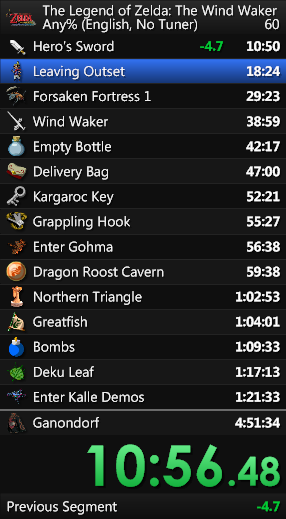

Inside the 100 busiest speedrun leaderboards in the world
61,797 verified runs, one 15-month-old horror game, and what they say about who actually grinds.
The busiest leaderboard isn't who you'd guess
In the 30 days before this dataset was captured on 25 May 2026, 2,230 speedruns were verified across the 100 most-active leaderboards on speedrun.com. One game — Granny: Legacy, a mobile horror puzzle whose leaderboard didn't exist 16 months ago — accounted for 561 of them. That is 25.2% of the entire top-100's recent activity, more than the next four games combined. Hollow Knight: Silksong, the most-anticipated indie release in years, was a distant second at 125. Super Mario 64 was third at 113.
By a different measure — distinct registered runners active in the last 90 days — the leaderboard reshuffles again. SpongeBob SquarePants: Battle for Bikini Bottom leads with 584 active runners, Granny: Legacy is second at 468, Poppy Playtime: Chapter 1 third at 451, and Silksong fourth at 226. A 22-year-old PS2 platformer, a 15-month-old Slavic horror game, and a free-to-play YouTube creepypasta game out-recruit the most prestigious release of 2025.
None of this is the picture casual observers carry around. The intuition is that the busiest speedrun leaderboards must be the most-iconic games — the SM64s, the GTAs, the Hollow Knights. The actual picture is something different: a working snapshot of where dedicated communities happen to be pouring labour at this particular moment. That is what the rest of this piece is about.
What "most active" actually selects
The dataset is the 100 games on speedrun.com with the most-recently-verified runs as of 25 May 2026: 61,797 runs across 608 per-game categories, submitted by 29,548 distinct registered runners. A "game" on speedrun.com is not one leaderboard but a small constellation of them — the median game in this cut carries five separately-ranked categories (Any%, 100%, Glitchless, and so on), the maximum is 31 (Super Mario Bros. Category Extensions). 19 games carry 10 or more parallel leaderboards.
Monthly verification volume across these 100 boards has risen roughly tenfold since 2020. The 2020 baseline was 155-500 verifications per month. By 2026, the typical month is 1,800-3,150. The single largest month in the dataset's history is March 2026, with 3,151 verifications. Speedrun.com was founded by Irish programmer Peter Chase ("Pac") in March 2014 with deliberately looser rules than the older Speed Demos Archive; by mid-2021 it hosted over 20,000 game leaderboards. The 100 boards in our cut are the freshest tip of that iceberg.
"Currently most-active" rewards three populations of leaderboards. The first is brand-new releases still onboarding their first runners — Subnautica 2 launched into Early Access on 14 May 2026 and arrived in the top-100 with 57 verified runs in eleven days. The second is recent blockbusters where the meta is still being figured out — Hollow Knight: Silksong, Hades 2. The third is "evergreen grinders" — Granny: Legacy, the SpongeBob series, ROBLOX-engine titles — where a small dedicated cohort uploads runs at a steady rate. The canon (SM64, Half-Life, Undertale) is present too, but as second-rank presences rather than the top of the list.
The megalaunch arc
Hollow Knight: Silksong was announced 14 February 2019 and released 4 September 2025 — a wait of six and a half years, during which Team Cherry's near-silence became its own joke. It sold over 7 million copies by mid-December 2025 and broke 500,000 concurrent Steam players on launch day. The speedrun leaderboards opened 1 October 2025. Within a month, per PC Gamer, Silksong had "more active runners than every other game on Speedrun.com, including Celeste and ULTRAKILL."
That spike is visible in the data: the Any% category took in 81 verified runs in its first week, held above 40 runs per week for the next six weeks, then settled into a 7-30 runs/week pattern through winter 2025-26. The volume curve is a classic speedrun-launch shape — a roaring early burst as everyone tries the new game, then a slow settling as the route stabilises and only the dedicated stay.
But there is a second curve underneath the first, and it is the more interesting one. In Silksong's launch week the median Any% submission was 4,975 seconds — 82.9 minutes. By 10 November, the weekly median had dropped to 68.4 minutes. By 2 February 2026, 61.4 minutes. By 20 April, 58.4 minutes. Across eight months the typical run shrank by about 22 minutes — a 27% reduction in median time. The route is now well-understood. The community as a whole, not just the world-record holder, has internalised the optimisation.
The standout name in the dataset's Silksong roster is Blue, a Swedish runner whose best Any% time across four submissions is 3,422 seconds: 57 minutes and 2 seconds. External reporting from late 2025 had Blue's world record at 1:03:41. The version in our dataset is six minutes faster. It is the only sub-60-minute Silksong Any% run held by any of the game's top 15 most prolific runners.
Silksong's runner base is also unusually international for a US-developer-led release. The USA leads with 292 of 1,096 distinct runners (27%) — but France is a strong second at 83, China third at 59, and Brazil, Germany, Australia, and the UK all sit between 30 and 50. The global average puts the USA at 31% of runners; Silksong sits below that.
The grinder dynasty
If Silksong is the announced megalaunch, Granny: Legacy is the unannounced one. Its leaderboard opened in February 2025 with a single verified run. By April 2025 it was at 12 runs per month, by July 28, by December 292. In January 2026 the leaderboard saw 501 verifications. By April it was at 899. The first three weeks of May 2026 had already produced 475. That is one of the steepest growth curves of any speedrun community in our dataset — from one run/month to ~900 runs/month in fifteen months — and it is still climbing.
The other thing about Granny: Legacy is where its runners are from. Of 1,245 distinct runners with a stated country, 533 (42.8%) are from Russia. Add Ukraine (142), Belarus (48), and Kazakhstan (47) and four post-Soviet states account for 770 of 1,245 runners — 61.8% of the entire Granny: Legacy community. The next-largest country (Romania, 63 runners) is more than 8x smaller than Russia alone. The USA, which dominates almost every other leaderboard in the dataset at 30%+, contributes 27 runners. No other game in the top-100 has anything close to this kind of single-region capture.
Granny is not alone in being a single-game dynasty. The all-time peak month for verification activity (3,151 runs in March 2026) was driven 33.8% by SpongeBob SquarePants: Battle for Bikini Bottom and 24.2% by Granny: Legacy — two games accounting for 58% of a single month's activity across the entire top-100 cut. SpongeBob's BFBB community has been a speedrun anchor since AGDQ 2017 and has grown into a series of eight separate leaderboards in the top-100. These dynasties make most of the noise.
92% of speedrunners only run one game
The other side of the labour market is the runners themselves. Of the 28,069 distinct registered runners in the dataset, 25,863 (92.1%) submitted verified runs in only one game. Another 1,758 (6.3%) cover two games. 439 (1.6%) cover three to five. Only nine runners — barely 0.03% of the population — cover six or more. The median runner has run one game, once. The mean is 1.10 games per runner. Speedrunning, even at the active edge, is a community of monogamists.
The same skew shows up in run counts. The top 1% of registered runners (280 people) account for 16.5% of all verified runs in the dataset. The top 5% account for 33.7%. The top 10% account for 44.6%. The top 20% account for 57.7% — closer to a 60/20 distribution than to the classic 80/20. The bottom half of the runner population contributes 23.2% combined. This is what a labour market with a long, long tail looks like.
The single outlier at the top of both distributions is Akuretaki, a runner from Russia, who has submitted 315 verified runs across 11 distinct games — over three times the run count of the next-most-prolific runner and the only runner in the dataset with double-digit game spread. Behind Akuretaki, the top is dominated by single-game specialists: Naaag_420 (USA) with 254 runs on one game, Gaming_64 (USA) 181 on one, Snakeabake (USA) 164 on one. Akuretaki is the rare polyglot — a one-person counterexample to the monogamy rule.
Where the records actually live
If you ask which country produces the most speedrunners in this cut, the answer is unsurprising: the United States, with 8,031 of 25,580 runners (31.4%). The follow-up — Russia 6.7%, Canada 4.7%, France 4.2%, Germany 3.6%, Brazil 3.2% — looks like the global map of any online community.
But ask a different question — "where do the world records live?" — and the map rearranges. Take all 1,210 leaderboard rank-1 rows (one per category) and look at the runner's country. The USA holds 210 (24.1% of WRs with a known country), meaningfully less than its 31% share of runners would predict. Russia holds 11.7% of WRs against 6.7% of runners — almost double its share. Brazil holds 10.9% of WRs against 3.2% of runners — punching nearly 3.5x its weight. Czech Republic (6.4% of WRs, 0.5% of runners) and Romania (6.0% of WRs, 0.7% of runners) appear to be entirely different countries on the WR map than on the runner map. Both punch around 10x their share.
Put bluntly: the easy thing to say about speedrunning is that the USA wins. The harder, more interesting thing the data says is that the USA wins by raw numbers but consistently under-performs per-capita-of-runners, while small Eastern European countries pull WRs at multiples of their effective participation rate.
The platforms beneath the runs
Roughly half of all runs in our top-100 cut were performed on PC — 30,755 of 61,797 (49.8%). The other half is spread across 65 distinct platforms, with no single one above 8%. Web games account for 7.4% (mostly Google Snake and other browser titles). The original Nintendo 64 still appears in 6.7% of runs, almost all of them Super Mario 64. Android takes 5.6% (largely Granny). The long tail runs from PlayStation 4 down to a single run verified on "Airplane Seats."
Emulator share — the fraction of runs flagged as performed on an emulator rather than original hardware or PC-native — peaks in 2018 at 18.3% of that year's runs. It has been declining since: ~10% across 2020-2024, 8.5% in 2025, 7.8% so far in 2026. Part of this is composition (more PC-native games entering the most-active cut, with no emulator distinction to make); part is real (tightening rulesets on classic-console leaderboards, plus easier and cheaper access to original hardware). The verification system on speedrun.com is decentralised to each game's moderator team, so this is the aggregate effect of dozens of independent rule choices.
Drill into one canonical retro title and the picture is sharper. Super Mario 64 has 4,403 verified runs in the dataset; 3,997 of them (90.8%) are on the original Nintendo 64 platform — and within that N64 cohort, 40.4% are flagged as emulated. "SM64 on N64" today is roughly a 60/40 split between original cartridge hardware and software emulators. The 9% of runs on Wii or Switch Virtual Console are themselves running emulated copies, just official ones. Calling any of this "console speedrunning" requires a footnote.

None of these patterns are permanent. The dataset is a snapshot of late May 2026. Run the same fetch in November 2026 and Granny: Legacy will have either matured into a stable community or collapsed; Silksong will either still be receiving routes or be a dormant leaderboard; some game we haven't named will be the next surprise. The 100 most-active boards are a moving window onto a working community — and the only honest way to read the snapshot is as a labour-market document, not as a verdict on who is the best at video games.
Data source
- speedrun.com REST API v1, www.speedrun.com/api/v1 (docs: speedruncomorg/api). Fetched 25 May 2026, top-100 by recent verification activity, per-game categories only.
External context
- Speedrunning — Wikipedia (history, verification model, categories, controversies).
- Hollow Knight: Silksong — Wikipedia (release date, sales figures).
- "Silksong's Any-percent speedrun is already below 1 hour" — PC Gamer (Silksong leaderboard stats).
- "Subnautica 2 Early Access Launches May 14, 2026" — subnautica2.gg.
- "Awesome Games Done Quick 2026 raises over $2.44 million" — Game Developer.
- "Meet the Irishman who owns Speedrun.com" — We Are Irish (Peter "Pac" Chase, founder profile).
Media credits
- Teaser image: generated via
openai/gpt-5.4-image-2; animated to MP4 viagoogle/veo-3.1-fast(image-to-video). - Timeline sonification: synthesised in Python from the actual monthly verification series (see
code/09_sonification.py). - Featured runner clip: BlueSR on YouTube — Silksong Any% in 1:03:41 (former world record).
- SGDQ stage photo: "Cheese performing, SGDQ" on Wikimedia Commons.
- LiveSplit interface: "LiveSplit_interface.png" on Wikimedia Commons.
Tools
- Charts: Vega-Lite v5. Data inlined from
analyst.jsondata_tables — no external fetches. - Pipeline: Data Journalist Agent (Data2Story) — Detective → Analyst → Editor → Designer → Programmer → Auditor → Inspector.
All numbers in this article are traceable to the underlying analysis scripts under code/ and the chart-ready tables under analyst.json. Open viewer.html for sentence-level evidence inspection.